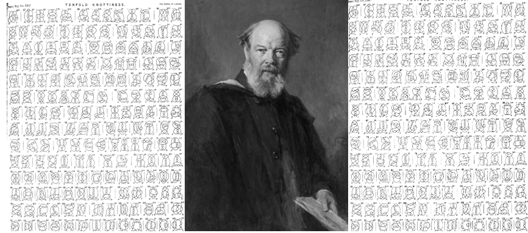
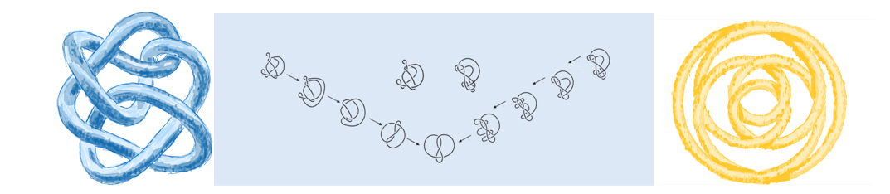

Conceptos y Clasificación de Nudos
Fundamentos matemáticos, tipos de nudos y su relevancia en la topología moderna.
Definición formal
Un nudo se define como una incrustación de un círculo en el espacio tridimensional. La teoría de nudos estudia sus propiedades topológicas, cómo pueden deformarse sin cortarse ni pegarse, y busca clasificarlos sistemáticamente.
Tipos y clasificaciones
1. Nudo trivial
El nudo trivial es la forma más simple: una circunferencia sin entrelazamientos. Aunque parezca un lazo sin nudo, es el punto de partida en la teoría de nudos.
2. Nudo de trébol
Con tres cruces, es el más simple entre los nudos no triviales. Representa una estructura básica para analizar propiedades de simetría y equivalencia.
3. Enlaces de nudos
Un enlace de nudos se forma cuando dos o más nudos se entrelazan entre sí sin fusionarse. Un ejemplo cotidiano es una cadena, que puede verse como una secuencia de nudos triviales enlazados.
4. Nudo conjugado y primo
Un nudo conjugado se obtiene al unir dos o más nudos mediante un corte y unión de extremos, creando estructuras más complejas. Un nudo primo, por el contrario, no puede descomponerse en nudos más simples; constituye una unidad fundamental dentro de la teoría.
5. Nudos toroidales
Se describen algebraicamente como curvas sobre la superficie de un toro. Su estudio revela conexiones entre geometría y topología algebraica.
Clasificación histórica
El físico Guthrie Tait fue pionero en la clasificación de nudos, estableciendo las bases de esta teoría. Su primera clasificación consideraba a todos los átomos como simplemente un núcleo siendo orbitado por un electrón haciendo un circuito cerrado, entonces, variando la ruta que hace el electrón debía poder describir cualquier elemento. Aunque su concepción de la materia era errónea, logró catalogar los primeros 15 nudos de hasta 7 cruces. Junto con James Clerk Maxwell, catalogó los primeros nudos de hasta nueve cruces. Hoy en día, se han identificado más de 352 millones de nudos con hasta 19 cruces, lo que demuestra la complejidad exponencial de esta área de estudio.

El problema de la equivalencia
Uno de los grandes desafíos en la clasificación de nudos es determinar cuándo dos nudos son realmente distintos. Un mismo nudo puede parecer completamente diferente tras simples deformaciones, por lo que es esencial garantizar que las clasificaciones no incluya nudos topológicamente equivalentes.

Movimientos de Reidemeister
En 1927, Kurt Reidemeister demostró que cualquier par de diagramas del mismo nudo pueden relacionarse mediante tres movimientos elementales. Este teorema es la base formal para probar la equivalencia entre nudos.
- Movimiento I: Introducir o eliminar un bucle.
- Movimiento II: Deslizar un segmento sobre otro, añadiendo o eliminando dos cruces.
- Movimiento III: Deslizar un segmento sobre una intersección sin alterar las conexiones.

Nudos Diminutos
En el interior de nuestras células y en la corriente sanguínea existen estructuras que, sorprendentemente, adoptan formas de nudos. El ADN, portador de nuestra información genética, se comporta como un nudo diminuto, con enredos y cruces que influyen en su replicación y expresión genética.

Matemáticos destacados
Francisco Xavier “Fico” González Acuña, matemático mexicano, pionero en topología y teoría de nudos en América Latina. Su trabajo y docencia en México han impulsado generaciones de investigadores, siendo referente en la comunidad matemática internacional.